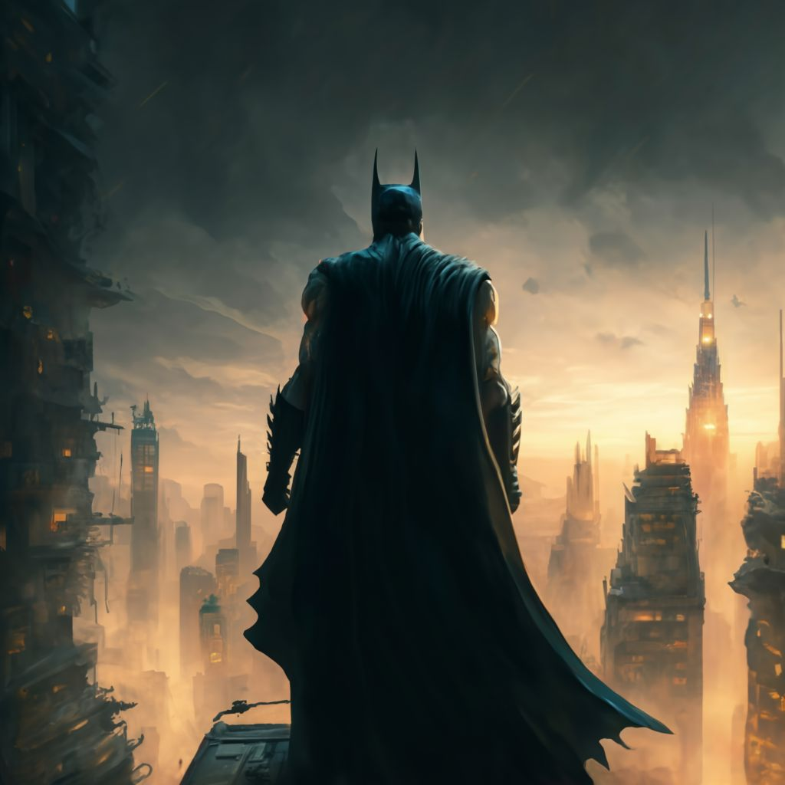

Consciente del peso de su decisión, Batman eligió la vía del diálogo y la negociación, apostando por la humanidad que aún residía en algún rincón de la mente fracturada de Dos Caras. Sabía que enfrentarse a él con violencia mientras tenía un rehén solo aumentaría el riesgo de un desenlace fatal. Con una voz firme pero calmada, Batman se dirigió a Dos Caras, llamándolo por su verdadero nombre: "Harvey, sé que aún estás ahí. No tienes que hacer esto. Puedes ser mejor. Recuerda quién eras, quién puedes volver a ser."
Por un momento, el tiempo pareció detenerse. La tensión en la sala era palpable, con los rehenes y los secuaces incapacitados observando en un silencio abrumador. La dualidad en la cara de Dos Caras reflejaba su lucha interna, una batalla entre el caos y el orden, la locura y la cordura.
Finalmente, la mano que sostenía el arma comenzó a temblar, y en los ojos de Dos Caras, por un instante, brilló una luz de claridad. Con un suspiro cargado de resignación y un destello de la persona que una vez fue, Harvey Dent soltó el arma y liberó al rehén, dejándose caer de rodillas. Batman se acercó rápidamente para asegurar a Dos Caras y brindar asistencia al rehén liberado.
La noche aún era joven, y Gotham estaba lejos de estar segura, pero gracias a la determinación y la compasión de Batman, una tragedia había sido evitada. Mientras la policía de Gotham llegaba para hacerse cargo de la situación, Batman desapareció en la noche, recordando una vez más el delicado equilibrio entre la oscuridad y la luz que define su cruzada.
Y así concluye este capítulo en la eterna batalla por la justicia en Gotham, con Batman como su incansable guardián. Una noche en la que la esperanza prevaleció sobre el caos, gracias a la elección de un hombre de creer en la redención sobre el castigo. Pero la lucha continúa, y Batman permanece vigilante, siempre listo para enfrentar las sombras que amenazan su ciudad.
|
 |